5580C air bag system
- Path
- Descriptions > 55 ELECTRICAL EQUIPMENT > 5580 SPECIAL ACCESSORIES > 5580C air bag system
- Kind
- system description
- Applies to
- all engines; all production periods
- Interactive page
- https://sloeber94.github.io/elrnDB-fPnd/en/#/2750973
Applies to: all engines; all production periods
The following figure shows the complete configuration of the Air Bag system.
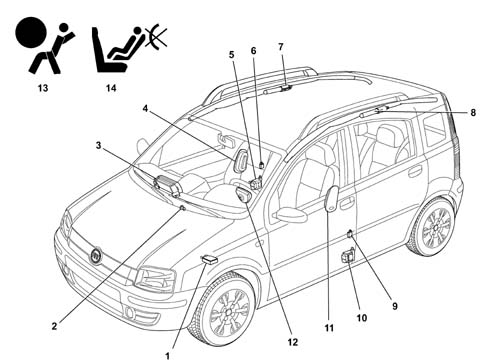
1 - Electronic control unit 2 - Key switch for disabling the passenger's front Air Bag 3 - Passenger's Air Bag module 4 - Passenger's Side Bag module 5 - Passenger seat belt pretensioner 6 - Side impact satellite sensor 7 - Passenger's Window Bag module 8 - Driver's Window Bag module 9 - Side impact satellite sensor 10 - Driver's pretensioner 11 - Driver's Side Bag module 12 - Driver's Air Bag module 13 - Air Bag system failure warning light 14 - Passenger's front Air Bag deactivation warning light
Applies to: all engines; all production periods
The system is not equipped with a passenger presence sensor
Applies to: all engines; all production periods
The Air Bag system used on the car intervenes, in the case of front or side impacts of medium-high severity, to protect the occupants of the front seats and the heads of the occupants of the side rear seats. The system is completed by the presence of pretensioners on the front seat belts which, to optimise their retaining action, have a load limiter.
So that the Air Bag system can carry out its function with the maximum efficiency, the seat occupants MUST wear their seat belts correctly.
The front airbags are all single-stage, i.e. with only one charge per module.
A control system managed by the electronic control unit, in the case of a front or side impact, controls the partial or total activation of the devices.
The Air Bag system components are connected electrically by dedicated wiring, integrated in the dashboard wiring loom for the front devices, and in the rear wiring loom for the side devices.
The control unit is connected to the system by means of two connectors, one for the front cable and one for the rear cable.
The passenger's front Air Bag module can be deactivated voluntarily, by a specific key switch located beside the dashboard. The deactivation of the passenger's front Air Bag module does not disable the side Air Bag modules. Thus in the evente of a side impact, protection is also offered to any child who may be on board.
To indicate the state of efficiency, the system has:
- fault warning light (red) on the instrument panel;
- passenger's Air Bag disabled warning light (yellow) on the instrument panel;
- serial diagnostic serial, integrated in the EOBD socket, for checking efficiency using the EXAMINER.
Applies to: all engines; all production periods
The Air Bag protection system comprises the following:
- an electronic control unit;
- two side impact sensors (right and left);
- a switch for disabling the passenger's Air Bag;
- two front Air Bag modules for protecting the front seat occupants;
- two side protection Air Bag modules (chest, abdomen) for the front seat occupants;
- two side Air Bag modules protecting the heads of the front seat occupants and the rear side seats.
- two seat belts with pretensioners on the front seats.
Applies to: all engines; all production periods
ELECTRONIC CONTROL UNIT
The control unit is located on the car floor near the climate control unit
Applies to: all engines; all production periods
Specifications
The electronic control unit manages the entire system, checking all the components, and has the function of recognising a crash situation promptly and activating only the pretensioners or the pretensioenrs and the Air Bag modules, depending on the type and severity of the crash.
The control unit is fixed rigidly to the bodywork, under the central console near the centre of gravity, to allow the deceleration sensors it contains to detect precisely the deceleration of the car.
Applies to: all engines; all production periods
Components
The following figure shows the control unit.
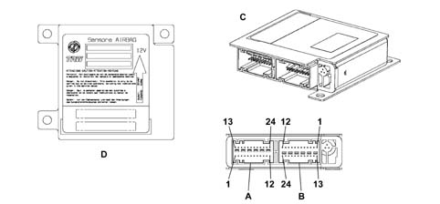
A - 24-way connector M060A for front cable B - 24-way connector M060A for rear cable C - Control unit D - Identification plate
Applies to: all engines; all production periods
Components
Connector A Pin Out
Conn. | Pin | Operation |
|---|---|---|
M060A | relay | Earth |
M060A | relay | Supply + 15 |
M060A | 3 | Serial interface K line |
M060A | 4 | N.C. |
M060A | 5 | N.C. |
M060A | 6 | Crash output |
M060A | 7 | Passenger airbag inhibition switch |
M060A | 8 | N.C. |
M060A | 9 | Passenger Air Bag deactivation warning light |
M060A | 10 | Failure warning light |
M060A | 11. | N.C. |
M060A | 12. | N.C. |
M060A | 13 | N.C. |
M060A | 14 | N.C. |
M060A | 15 | N.C. |
M060A | 16 | N.C. |
M060A | 17 | N.C. |
M060A | 18 | N.C. |
M060A | 19 | N.C. |
M060A | 20 | N.C. |
M060A | 21 | Driver's airbag + |
M060A | 22 | Driver's airbag- |
M060A | 23 | Passenger airbag+ |
M060A | 24 | Passenger airbag- |
Connector B pinout
Conn. | Pin | Operation |
|---|---|---|
M060B | relay | Driver's side sensor + |
M060B | relay | Driver's side sensor - |
M060B | 3 | Passenger's side sensor- |
M060B | 4 | Passenger's side sensor+ |
M060B | 5 | N.C. |
M060B | 6 | N.C. |
M060B | 7 | N.C. |
M060B | 8 | N.C. |
M060B | 9 | N.C. |
M060B | 10 | N.C. |
M060B | 11. | N.C. |
M060B | 12. | N.C. |
M060B | 13 | Driver's pretensioner + |
M060B | 14 | Driver's pretensioner - |
M060B | 15 | Passenger pretensioner - |
M060B | 16 | Passenger pretensioner + |
M060B | 17 | Driver's window bag + |
M060B | 18 | Driver's window bag - |
M060B | 19 | Passenger window bag - |
M060B | 20 | Passenger's window bag + |
M060B | 21 | Driver's side bag + |
M060B | 22 | Driver's side bag - |
M060B | 23 | Passenger sidebag - |
M060B | 24 | Passenger side bag + |
The control unit contains two deceleration sensors, one electronic and the other an electromechanical safety sensor which has the function of giving enablement to activation, working independently from the electronic sensor.
If the car's deceleration value, measured by the electronic sensor and processed by the processor in terms of severity of the crash, exceeds the severity level established for the command to activate the devices, the control unit makes sure that this command can only be sent if, at the same time, the safety sensor is closed.
To ensure the correct management of the system, the following functions are present:
- accumulation of energy: the control unit is supplied at 12V with key in the ON position, but can operate for a few fractions of a second if the supply voltage is interrupted or drops, so as to ensure operation of the system and write the data in the crash memory.
- fault memory: with the ignition on, the control unit continuously checks that the circuit is working (including the energy reserve circuit), during normal operation of the car and during normal operation of the car and during any crashes, and tests all the electrical parts of the system, indicating the presence of faults by switching on the Air Bag fault warning light on the instrument panel and memorising the fault code.
- crash memory: this records the information, relating to crash events, which have led to the activation of the pretensioners and modules, front or side.
In view of the importance of its functions, the control unit is designed in such a way that it cannot be opened with leaving visible signs of having been tampered with.
Applies to: all engines; all production periods
Operation
In the case of a frontal impact, the electronic sensor detects a deceleration signal along the vehicle's longitudinal axis. If the signal, processed by the control unit's processor, indicates a crash severity such as to require the intervention of the system and if, at the same time, the safety sensor is closed (enablement for activation), the control unit, as the first intervention level, commands the activation of only the pretensioners or, in the case of a more severe impact, the pretensioners and front Air Bags (activation of driver's module only if the passenger's module has been deactivated).
As with a side impact, the satellite sensors, located in the central pillars, detect the direct crash signal along the car's transversal axis, and send it to the control unit. If the severity of the crash is such as to require the system's intervention, if the information from the satellite sensors corresponds to that from the safety sensor, the control unit commands the activation of the modules on the side affected by the crash. The side modules are activated independently of each other (driver's or passenger's) and of the front modules.
The activation of the front Air Bags is always preceded by the activation of the pretensioners, unless the pretensioners have been activated in a previous crash and have not yet been replaced.
The system activation times are in the order of thousandths of a second and anticipate the movements of the occupant's body following the impact.
After each activation of one of the systems operated (pretensioners, front Air Bags, side Air Bags), the control unit memorises the activation in non-deletable memory and causes the fault warning light on the instrument panel to come on.
Before being replaced, the control unit guarantees the activation of the individual devices within the following limits:
- 3 impacts with activation of the front seat belt pretensioners only;
- 3 impacts in total with activation of the side Air Bags (right or left)
- 1 impact with activation of the pretensioners and front Air Bags;
- any combination of the above cases until one of the limits indicated is reached.
If one of the limits described has not been reached, it will be possible, after restoring the operating conditions of the system, to reuse the control unit after carrying out the RESET procedure by means of the EXAMINER. The last activation, for each of the sequences, will prevent further reset conditions.
Applies to: all engines; all production periods
System autodiagnosis
The control unit carries out a continuous self-test of the system's operation. In particular:
- it detects and memorizes any faults
- it recognizes the various components and the type of fault;
- it signals the onset of these faults via the special warning light in the instrument panel.
The faults memorised in the control unit may only be deleted after the fault has been repaired using the EXAMINER diagnostic equipment.
Applies to: all engines; all production periods
AIR BAG SYSTEM FAILURE WARNING LIGHT
View of position on instrument panel
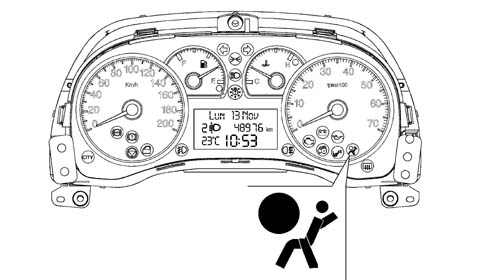
Applies to: all engines; all production periods
Specifications
During starting, key in key-on position, the fault warning light (red) comes on for about four seconds (initial self-test stage) and then goes out. If the control unit detects a fault in the warning light, it memorises the corresponding fault code. If no faults are detected in the system at key-on, and there are no fault conditions in the fault memory, the warning light goes out after four seconds of self-test, otherwise it stays on until key off. In this case, the fault message also changes on the display (if present) 10 s after receiving a command from the CAB.
The airbag warning light is controlled directly from the Airbag control unit (CAB). The CAB is not connected via the CAN.
Messages on the display (where present) are managed by the Instrument Panel Node.
Applies to: all engines; all production periods
Operation
The warning light remains on or comes on, during the normal operation of the vehicle (with a fault message on the display if present), in the following cases:
- the control unit detects a fault in the Air Bag system;
- the control unit detects an impact with activation of the system;
- the control unit detects a fault in the actual warning light connection circuit.
As a result of an impact with the intervention of only the pretensioners or side Air Bags, the warning light stays on until the system's operating conditions are restored (replacement of the component concerned and rest of the control unit using the EXAMINER).
if the impact causes the intervention of the front Air Bag modules, the warning light stays on permanently, and the control unit cannot be reset (in this case the control unit must be replaced).
If internal operating faults arise during the control unit's operating life, and these faults cannot be reset by the EXAMINER, they are indicated by the warning light staying on permanently.
Applies to: all engines; all production periods
PASSENGER'S FRONT AIR BAG DISABLED WARNING LIGHT
View of position on instrument panel
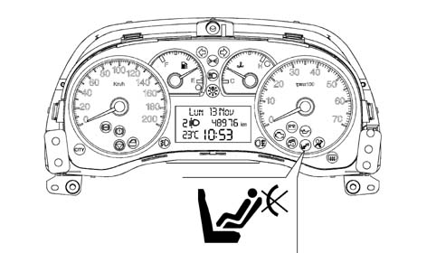
Applies to: all engines; all production periods
Specifications
With the key at the key-on position, the passenger's Air Bag disabled warning light (yellow) comes on for about four seconds (initial self-test stage). If the control unit detects a fault in the warning light, it memorises the relevant fault code, switches on the fault warning light and keeps the passenger's Air Bag module disabled. Restore the system's operation using the EXAMINER, in the same way as for the fault warning light.
After the initial four-second self-test stage, if the disabling key switch is turned to the OFF position, the warning light stays on indicating that the passenger's module is disabled. If there are no faults, the light flashes for a further four seconds and then goes out, indicating that the passenger's module is enabled.
Applies to: all engines; all production periods
DRIVER'S AIR BAG MODULE
The following figure shows a view of the assembly
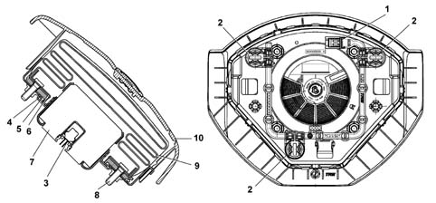
1 - Horn connector 2 - Horn contacts 3 - Connection point to the electrical system 4 - Housing 5 - Bag fastening plate 6 - Retaining ring 7 - Gas generator 8 - Nut 9 - Bag 10 - Cover
Applies to: all engines; all production periods
Specifications
The driver's airbag module is snap-in, i.e. the module is fastened to the steering wheel by a spring clip without retaining bolts.
The Air Bag is a passive safety device made up of a bag which, in the case of a frontal impact, automatically inflates placing itself between the body of the driver and the structure of the front part of the passenger compartment. The Air Bag module is installed in the centre of the steering wheel, and its cover also acts as the horn control.
Applies to: all engines; all production periods
Components
The module comprises:
- a plastic cover; which in the case of activation tears in predefined points to allow the bag to expand correctly;
- a bag, with a volume of about 55 litres, made of nylon fabric to minimise skin abrasions in the case of contact, and folded in a particular way so that it inflates gradually and not directly facing the driver;
- a pyrotechnic gas generator
- a casing.
On the bottom of the gas generator, there is a warning plate which gives the instructions for handling (see PROCEDURE 5580C).
Applies to: all engines; all production periods
Operation
The gas generator for inflating the module is electrically activated by a signal coming from the electronic control module. Following this signal, a pyrotechnic charge contained in the generator is triggered. The gases produced by the combustion of the charge flow through special holes and expand in the bag, causing the cover to tear at the specific points. When fully inflated, the cushion is in the optimum position to carry out its function to retain the occupant. After being inflated by the gas, the bag deflates immediately through specific vent holes.
Applies to: all engines; all production periods
CLOCK SPRING
The following figure shows a view of the assembly
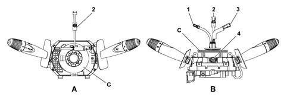
A - Front view of the stalk unit B - Lower view of the stalk unit C - Clock spring 1 - Electrical connection for connecting horn 2 - Electrical connection for Air Bag 3 - Electrical connection for connecting radio controls 4 - Lower connector
Applies to: all engines; all production periods
Specifications
The Clock Spring is a device which allows the connecting cables for the Air Bag module and other electrical controls installed in the steering wheel to follow the steering wheel rotation without the risk of breaking.
The device, consisting of two plates is secured by means of the lower plate to the stalk unit, and is joined to the steering wheel by means of specific recesses on the upper plate. The connection to the electrical system is via the connection points, present on the edge of the lower plate.
Applies to: all engines; all production periods
Components
The clock spring has three cables on the steering wheel side, one of which is for connecting the Air Bag module. Once connects the steering wheel radio controls and the other connects the horn.
On the upper plate, steering wheel side, there is a ring which automatically blocks the rotation between the two plates when the device is removed from the steering wheel.
The new device is supplied with a safety key for transport, to be removed before fitting.
Applies to: all engines; all production periods
Operation
Inside the two plates, the connecting cables for the Air Bag module and the various electrical functions are wound in a spiral, with a sufficient number of coils to follow the steering wheel's rotations. The upper plate rotates by means of the recesses present inside the locking ring which fit in the seating on the steering wheel hub. In the working position, the steering wheel presses on the ring, freeing it from the recesses, thus unlocking the rotation between the two plates. When the steering wheel is removed, pushed by a spring, it blocks the rotation between the two plates. This function prevents the top plate, no longer locked to the steering wheel, from turning freely and causing the sprial inside the device to unwind or wind and then possibly break.
In operations involving the removal of the steering wheel and the device, the following must be observed:
- always operate with the wheels lined up straight;
- for safety, lock the clock spring with a band before removing it from the stalk unit.
Applies to: all engines; all production periods
PASSENGER AIR BAG MODULE
The following figure shows a view of the assembly
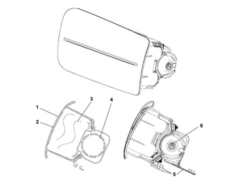
1 - Bag cover 2 - Pre-established break lines 3 - Folded bag 4 - Gas generator 5 - Metal mount 6 - Connection point
Applies to: all engines; all production periods
Specifications
The passenger's Air Bag module is located inside the dashboard, near a foam rubber flap in the trim, above the glove compartment, and is secured by brackets to the crossmember. As for the driver's module, it intervenes to provide front protection for the passenger, in the event of crashes which exceed a particular threshold, and can also be specifically disabled.
Applies to: all engines; all production periods
Components
The module comprises:
- a metal mounting containing the gas generator and bag;
- a plastic cover with preset break lines that allow the bag to expand;
- a bag, with a volume of about 90 litres, made of nylon fabric in order to minimise skin abrasions in the event of contact, and folded in a particular way;
- a gas generator consisting of a pressurised gas container holding a pyrotechnic charge;
- a point for connection to the electrical system;
a warning plate on the lower part of the module gives the handling instructions (see PROCEDURE 5580C).
Applies to: all engines; all production periods
Operation
The gas generator for inflating the module is electrically activated by a signal coming from the electronic control module. Following this siganl, a pyrotechnic charge is triggeed which causes the gases contained in the generator to expand. The gases expand, coming out of specific holes, and inflate the bag. The increase in volume of the bag causes the cover to break along the preset lines, thus allowing the bag to emerge.
When fully inflated, the cushion is in the optimum position to carry out its function to retain the occupant. After being inflated by the gas, the bag deflates immediately thanks to the permeability of the fabric.
Applies to: all engines; all production periods
PASSENGER AIR BAG DISABLEMENT KEY SWITCH
The airbag disablement switch is located inside the passenger side glove compartment (on the left internal wall),
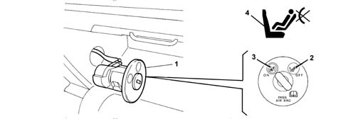
1 - Key switch 2 - OFF position: passenger's Air Bag disabled 3 - ON position: passenger's Air Bag enabled 4 - Passenger's Air Bag disabled warning light
Applies to: all engines; all production periods
Specifications
A switch operated by the ignition key allows the passenger's Air Bag module to be enabled (ON) or disabled (OFF).
Applies to: all engines; all production periods
Components
The diagram below shows a view of the assembly.
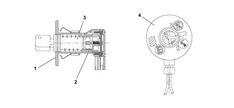
1 - Casing 2 - Switch 3 - Key barrel 4 - Plate
Applies to: all engines; all production periods
Components
The unit consists of a casing containing the switch, a key barrel inserted in the casing and held by a clip and a plate which indicates the position assumed by the switch (ON or OFF). On the casing, there is also the seating for the connector to the electrical system.
Any faults in the switch are indicated by the Air Bag system fault warning light coming on.
Applies to: all engines; all production periods
Operation
The switch can be operated by the car's ignition switch whenever the activation of the passenger's front module is to be enabled or disabled.
The electronic control unit checks the status of the switch during the normal diagnostic procedure at Key On (four seconds). If the recognised state is OFF, it excludes the module from possible activation, memorises the corresponding signal and causes the passenger Air Bag disabled warning light on the instrument panel to come on. If the recognised state is ON, after the four seconds of the diagnostic procedure the warning light flashes for a further four seconds and then goes out.
The remaining side airbags (window bag and side bag) and pretensioners are not affected by the deactivation command.
In the case of faults in the switch, the system ensures the following:
- it does not activate the passenger module
- it causes the Air Bag fault warning light to come on
- it causes the passenger Air Bag disabled warning light to come on
- it memorises the state of deactivation.
Applies to: all engines; all production periods
Specifications
To provide maximum protection to the front seat occupants in the event of side impacts, there are side Air Bag modules installed on the seat squabs, on the side facing the outside of the car, under the cover.
This conformation is considered to be the most efficient as it always enables the Air Bag to be in the optimum position in relation to the occupant, irrespective of the seat adjustment or size of the occupant.
The side Air Bag mainly protects the chest and abdominal region, even if the occupant is not seated correctly, as the dynamics of opening of the bag minimises the risk of damage to the body caused by the impact with the Air Bag.
Applies to: all engines; all production periods
Components
View of Side Bag components
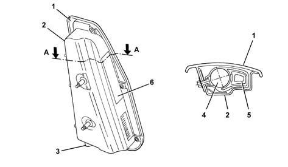
1 - Outer cover 2 - Container 3 - Point of electrical connection 4 - Gas generator 5 - Folded bag 6 - Warning plate
Applies to: all engines; all production periods
Components
The side Air Bag module consists of a plastic container holding the gas generator and a permeable nylon bag with a volume of about 12 litres.
The module's container has a cover with predetermined break zones which, with the seat squab cover fitted, line up with easy-open sections of seam on the outside of the seat cover.
On the bottom of the container, there is a warning plate which gives the instructions for handling the module (see PROCEDURE 5580C).
The module is connected to the electrical system by means of two cables with a yellow coloured outer casing housed, together with the earth connecting cable for the seat, in a protective duct, secured to the seat structure.
Applies to: all engines; all production periods
Operation
The gas generator for inflating the module is electrically activated by a signal coming from the electronic control module. Following this siganl, a pyrotechnic charge is triggeed which causes the gases contained in the generator to expand. The gases expand, coming out of specific holes, and inflate the bag. The increase in volume of the bag causes the container to break in the predetermined areas and the seams on the seat squab cover to open along the preset sections, thus enabling the bag to come out correctly. After completion, the bag is in the optimum position for carrying out its function of protecting the occupant. After being inflated by the gas, the bag deflates immediately thanks to the permeability of the fabric.
Applies to: all engines; all production periods
Specifications
On some versions of the car, there is a system for protecting the heads of the front and rear side occupants.
Apart from the vehicle's structural characteristics, the Side Bags are the only passive protection system in the case of a side impact. The head protection Air Bags (Window Bags), in addition to the Side Bags and front Air Bags, offer the rear seat occupants the maximum possible protection in the event of a crash, also eliminating the risk of injuries to the arm and shoulder and protecting the heads of the rear side seat occupants.
Among the different types of Window Bag, the curtain system is the one which offers the best performance thanks to the large area of expansion and its self-supporting capacity, also in the absence of support if the side windows break during the impact.
Applies to: all engines; all production periods
Components
View of the Window Bag components
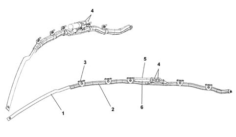
1 - Anchoring strap 2 - Bag containing sleeve 3 - Bag retaining bands 4 - Generator fastening points 5 - Gas generator 6 - Warning plate
Applies to: all engines; all production periods
Components
The Window Bag module consists of:
- a gas generator secured by appropriate mounting to the roof rail between the car's front and rear pillar;
- a bag, with a volume of about 26.5 litres, secured to the gas generator and made of a nylon permeable fabric folded inside a containing sleeve. The bag is designed so that, when inflated, it correctly absorbs the energy of the impact, holding the heads of the occupants an appropriate distance from the impact zone. Once inflation is complete, the gas emerges immediately through the porous cloth.
- Five plastic easy-open clamps secure the bag to the ceiling longitudinal member;
- a retaining strap which holds the inflated bag in position;
- a connector for connection to the electrical system;
- a warning plate which gives the instructions [PR5580C].
Applies to: all engines; all production periods
Operation
The gas generator for inflating the module is electrically activated by a signal coming from the electronic control module. Following this siganl, a pyrotechnic charge is triggeed which causes the gases contained in the generator to expand. The gases expand and emerge through specific holes and are distributed evenly along the length of the bag via the flexible pipe, inflating the bag. The increase in volume of the bag causes the fixing clamps to break, the sleeve seams to yield and the finishing trim to open, designed so as to allow the bag to emerge correctly downwards. The correct unfolding of the bag is ensured by a retaining strap, present at the front end of the bag. After completion, the bag is in the optimum position for carrying out its function of protecting the occupant. After inflation, the bag deflates immediately because of the permeability of the fabric.
Applies to: all engines; all production periods
SIDE IMPACT SATELLITE SENSORS
The sensors are located on the two central pillars above the pretensioners.
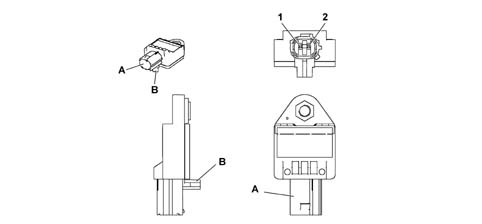
A - Connection B - Locating pin
Applies to: all engines; all production periods
SIDE IMPACT SATELLITE SENSORS
Pin 1: satellite sensor signal
Pin 2: satellite sensor earth
Applies to: all engines; all production periods
Specifications
Apart from the Air Bags, the side protection system also comprises the electronic control module which ensures correct operation. To measure the acceleration resulting from a side impact, there are two satellite sensors installed in the side pillars, containing an accelerometer.
Applies to: all engines; all production periods
Components
The side impact satellite sensor consists of a casing containing the acceleration sensor. At the rear of the casing, there is a pin for correct positioning in the seating. On the casing, there is also a connection point for connection to the electrical system.
Applies to: all engines; all production periods
Operation
If the acceleration value measured by the sensor in question causes a particular threshold to be exceeded, this information is compared with the measurement obtained from the safing sensor contained in the Air Bag system's electronic control unit. If the values measured are consistent, the control unit causes the activation of the Air Bags on the side affected by the impact.
Applies to: all engines; all production periods
Specifications
The pretensioners are pyrotechnic devices, electrically activated by a signal coming from the electronic control unit, integrated in the front seat belt reel (the rear seat belts are not fitted with pretensioners).
Pretensioners are only fitted to the front seat belt reels
The intervention of the pretensioners in the case of a frontal impact which exceeds a particular threshold, causes any slack in the seat belt to be taken up, thus holding the occupant as closely as possible to the seat squab.
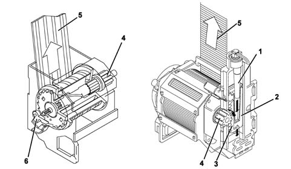
1 - Gas generator 2 - Piston 3 - Rack 4 - Winder reel 5 - Seat belt 6 - Torsion bar
Applies to: all engines; all production periods
Operation
The pretensioner device consists of a gas generator, housed in the structure, activated by an electrical signal coming from the electronic control unit. The pressure of the gas developed by the generator causes a piston to slide downwards instantaneously. Built into the piston, there is a rack which engages on the winder reel; the sliding of the rack causes the reel to rotate and so the belt to rewind for a few centimetres. The pretensioners have a load limiting device so that the load on the occupant's shoulder during retention is gradual.